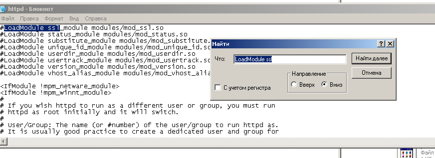
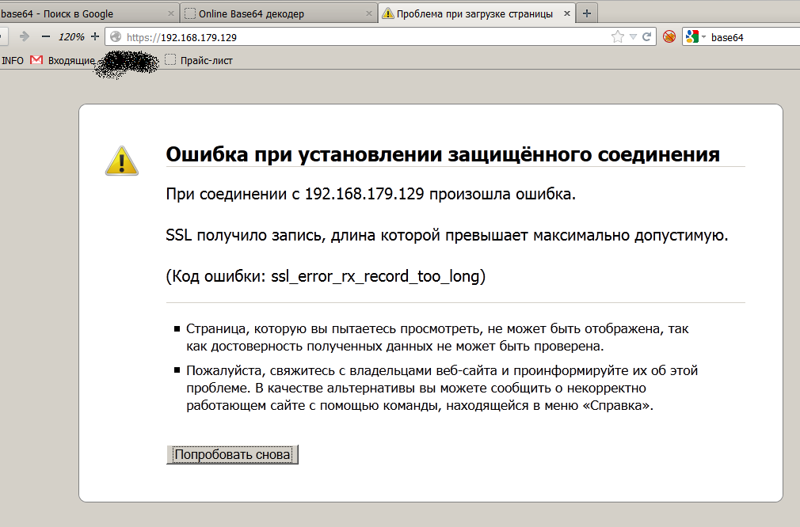
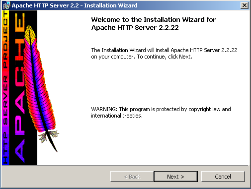

1С + Apache + SSL: почему вы должны использовать SSL (наглядная демонстрация)
Рассмотрим установку Apache на WindowsXP и публикацию файлового варианта базы на веб-сервер.
Надо заметить, что при работе с веб-сервером рекомендуется использовать не файловый, а серверный вариант работы 1С:Предприятия, т.к. связка веб-сервер+файловая БД вызывает значительную деградацию производительности при числе удаленных пользователей даже от 3х человек.
Что понадобится:
Установка Apache for Windows
Публикация базы 1С на веб-сервер.
Тут всё просто.
Администрирование --> публикация на веб-сервере.
Имя – то, что будет в адресной строке. Например, mysite.ru/UNF_Demo_web
Каталог – любая папка. В ней будет один маленький конфигурационный файл. Чем короче к ней путь и чем меньше в нём пробелов, тем иногда бывает меньше глюков у апача.
Нажимаем «Опубликовать», пару раз соглашаемся с перезапуском веб-сервера.
Всё! Публикация выполнена, запускаем браузер на клиенте, переходим по адресу [myhost]/[Имя].
На этом обычно все и заканчивают. Однако, поскольку доступ осуществляется по http, через незащищенный канал, передаваемая информация, в т.ч. пароли, может оказаться доступной для третьих лиц.
Не будем голословны, убедимся.
Извлекаем пароль
Используя любой сниффер, можно отследить запрос к серверу, где клиент передает какие-то данные, сразу после того, как пользователь ввёл логин, пароль и нажал кнопку ОК.
Очевидно, что пароль запрятан где-то в параметре credential («удостоверение»): cred=VGltb2ZlZXZhOjEyMzMyMQ== – другие не подходят по смыслу. Однако явного пароля мы тут не видим. Так может какая-то защита от пароля всё-таки используется?
Изучим страницу авторизации под отладчиком. В строке 147 файла loader.js наблюдаем:
Переменные: name (содержащая имя пользователя - timofeeva), dvk (содержит пароль в открытом виде - 123321).
Dvm = name + “:” + dvk // теперь dvm = “timofeeva:123321”
Затем к dvm применяется функция base64encode и результат (строка «VGltb2ZlZXZhOjEyMzMyMQ==» сохраняется в dvn. В таком виде данные об авторизации и передаются на сервер. BASE64 – это метод кодирования информации, когда все символы «сужаются» до только печатных, английских. Не представляет трудности восстановить эту строку. К примеру, в 1С:Предприятие есть метод глобального контекста Base64Значение (), есть немало и онлайн-сервисов.
Воспользуемся одним из них, и получим timofeeva:123321, т.е логин и пароль, разделённые двоеточием.
Таким образом, мы убедились, что шифрование данных для авторизации не используется, и любой вредитель, имеющий возможность прослушивать траффик, может с лёгкостью узнать логин и пароль.
Поэтому переходим к следующему шагу и включаем поддеркжу SSL.
Включение поддержки SSL в Apache
Открываем файл httpd.conf в папке C:\Program Files\Apache Software Foundation\Apache2.2\conf. Находим строку Listen 80, под ней дописываем Listen 443 (стандартный https порт)
Копируем файлы ssleay32.dll и libeay32.dll из C:\Program Files\Apache Software Foundation\Apache2.2\bin в C:\WINDOWS\system32.
Копируем файл openssl.cnf из C:\Program Files\Apache Software Foundation\Apache2.2\conf в C:\Program Files\Apache Software Foundation\Apache2.2\bin.
Создаем ключи. Т.к. мы создаем их сами и не подписываем в центре сертификации, при первом посещении странички браузеры будут ругаться и предупреждать о безопасности.Для этого:
В командной строке переходим в папку bin апача:
cd “C:\Program Files\Apache Software Foundation\Apache2.2\bin”
Выполняем команду
openssl req -config openssl.cnf -new -out my-server.csr
Отвечаем на вопросы, в принципе можно заполнять поля чем угодно – главное не забудьте пароль (pass phrase).
Выполняем
openssl rsa -in privkey.pem -out my-server.key
Тут понадобится пароль, указанный в предыдущем пункте.
Выполняем
openssl x509 -in my-server.csr -out my-server.cert -req -signkey my-server.key -days 5999
, где последний параметр – срок истечения валидности сертификата.
Выполняем
openssl x509 -in my-server.cert -out my-server.der.crt -outform DER
Создаем папку ssl в C:\Program Files\Apache Software Foundation\Apache2.2\conf и перемещаем файлы my-server.key и my-server.cert из C:\Program Files\Apache Software Foundation\Apache2.2\bin в C:\Program Files\Apache Software Foundation\Apache2.2\conf\ssl.
В файле httpd.conf ищем строку
#LoadModule ssl_module modules/mod_ssl.so
и раскомментируем её (убираем знак решетки).

Идем в самый конец httpd.conf, там строки
SSLRandomSeed startup builtin
SSLRandomSeed connect builtin
Удаляем их.
Вместо них вставляем следующие
SSLRandomSeed startup builtin
SSLRandomSeed connect builtin
SSLMutex default
SSLSessionCache none
SSLEngine On
SSLCertificateFile conf/ssl/my-server.cert
SSLCertificateKeyFile conf/ssl/my-server.key
Обратите внимание на последний блок со строкой, содержащей localhost:443
Вместо localhost надо вписать собственно адрес вашего сервера, по которому и будут идти обращения. Например, mysite.ru:443
Если этого не сделать, то клиент будет видеть странное сообщение об ошибке(в firefox - "SSL получило запись, длина которой превышает максимально допустимую."). И ещё большую странность ему будет добавлять то, что в разных браузерах будут разные сообщения.

Записываем изменения и закрываем httpd.conf
Запускаем редактор реестра (Пуск-выполнить – regedit), переходим в ветку HKEY_LOCAL_MACHINE\SYSTEM\CurrentControlSet\Services\Apache2.2.
Находим параметр ImagePath, и добавляем к его значению ключ -D ssl. Т.е. должно получиться "C:\Program Files\Apache Software Foundation\Apache2.2\bin\httpd.exe" -D ssl -k runservice.
Всё готово. Перезапускаем apache. Открываем Apache Monitor из области уведомлений и нажимаем restart. Если все отлично, то в лог выведется Apache service has restarted.
Если что-то не так, и apache не запускается, можно посмотреть подробности (например номер строки с ошибкой в httpd.conf) в журнале событий (панель управления- администрирование – просмотр событий – ветка «приложение». )
Проверим нашу работу
Заходим на сервер, для меня это https://192.168.179.129/UNF_Demo_web.
Т.к. сертификат мы сгенерировали сами, необходимо подтвердить исключение безопасности. Соглашаемся со всеми запросами, и наконец запускается 1С:Предприятие.
Всё работает, причем по ssl каналу. Мы молодцы? НЕТ.
Исправляем недостатки
Как известно, уровень безопасности системы равен наименее безопасному её элементу.
Уберём букву s в адресной строке. Любой пользователь по прежнему может зайти через http. И все старания по обеспечению безопасности сошли на нет.
Отключим полностью 80 порт, убрав или закомментировав (добавив # в начало строки) строку Listen 80 в конфигурационном файле httpd.conf. Перезапустим службу apache.
Отлично, теперь страница http://192.168.179.129/UNF_Demo_web не работает.
Теперь убедимся, что небезопасное http подключение, но к 443 порту не работает тоже. http://192.168.179.129:443/UNF_Demo_webвыдает ошибку.

Заключение
Мы получили работающий веб-сервер Apache с опубликованной базой 1С. Доступ возможен только по безопасному протоколу https. Настройка https занимает не так много ресурсов, зато обеспечивает защиту от перехвата паролей.
При внедрении решения на управляемых формах, при необходимости использования одной базы в территориально разделённых офисах, использование веб-сервера Apache + браузера/тонкого клиента выглядит привлекательнее, чем использование терминального сервера (Апач бесплатный) или VPN-подключения (апач проще в настройке).
Скриншоты
Веб-компонента в установщике платформы

Установщик апача. Шаг 0
Установщик апача. Шаг 1
Установщик апача. Шаг 2
Установщик апача. Шаг 4
Апач работает на 80 порту, http
Публикация базы на веб-сервер
Доступ к базе, используется http
snif link.PNG
Код, обеспечивающий формирование запроса на сервер
Декодированная строка с данными для авторизации
Добавляем прослушивание 443 порта в httpd.conf
Копируем нужные библиотеки в system32
Раскомментируем подгрузку подуля ssl
Этот кусок конца httpd.conf удаляем
Новый конец файла httpd.conf
Ошибка ssl при неверной секции </VirtualHost> файла httpd.conf
Перемещаем файлы сертификатов
Путь в реестре к параметру запуска службы апача
Новый параметр для запуска апача
Апач успешно перезапущен

Сертификат мы выдали сами себе, поэтому firefox предупреждает..
Доступ к базе, используется https
Отключаем прослушивание 80 порта
Обращение на порт 443 по http не пройдет!